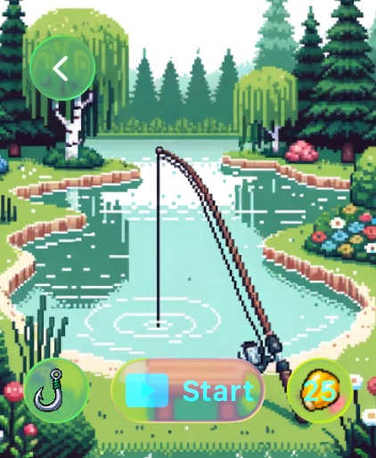
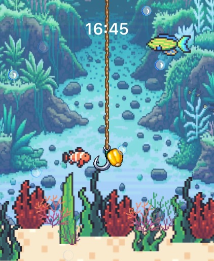
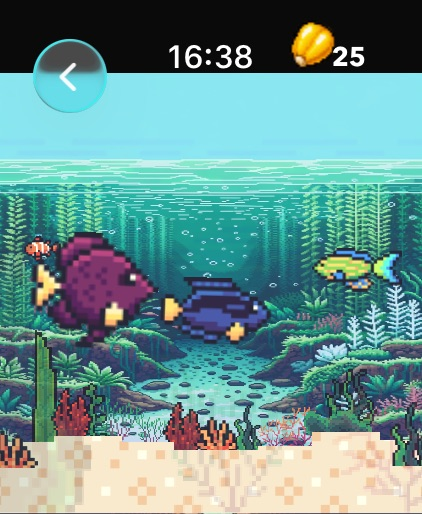
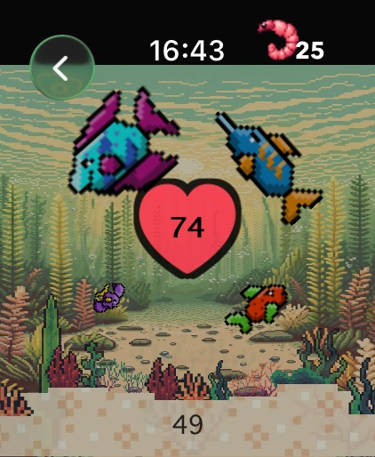
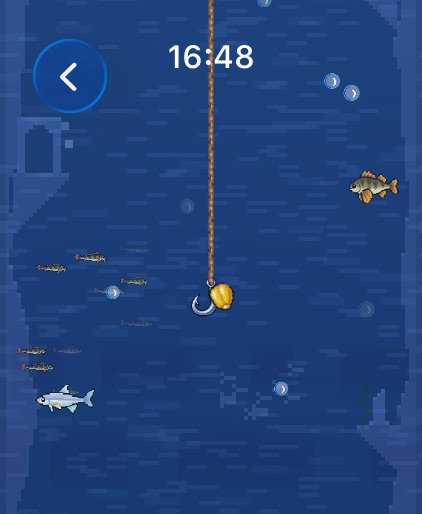
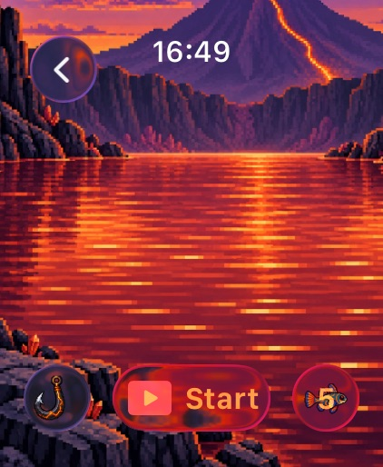

Fishy Watch
A fishing game built for Apple Watch. Cast with your arm, dive with the Digital Crown, and raise every catch in your own aquarium.

- LAUNCHED
- 2023-06-06
- PLATFORM
- Apple Watch
- LANGUAGES
- 24
- PRICE
- $0.99
Can a whole fishing trip fit on a wrist?
Use your arm to cast the line, or switch on automatic mode. Turn the Digital Crown to dive deeper, tap to hook curious fish and reel them in with the crown. Each fish has its own curiosity pattern and fight style, and every catch moves into its aquarium.
-
01
Your aquarium
Feed your fish to keep them alive and watch them grow from tiny fry to full-size elder. Widgets and notifications warn you before one starves.
-
02
Walk buddy
Pick a fish and your real steps extend its life: 1,000 steps add 10 minutes. A complication shows your buddy on the watch face.
-
03
Five mini-games
Dance, Rush, Deep Dive, Calm Water with optional heart rate, and the new Spot the Fish.
From the App Store






From home pond to volcanic caldera
Version 1.3 added a Glacial Lagoon, Mangrove Inlet, Moonlit Coral Cove and Volcanic Caldera, Game Center leaderboards, and a Deep Dive through sunken ruins. Heart rate is processed on the watch and never leaves it.